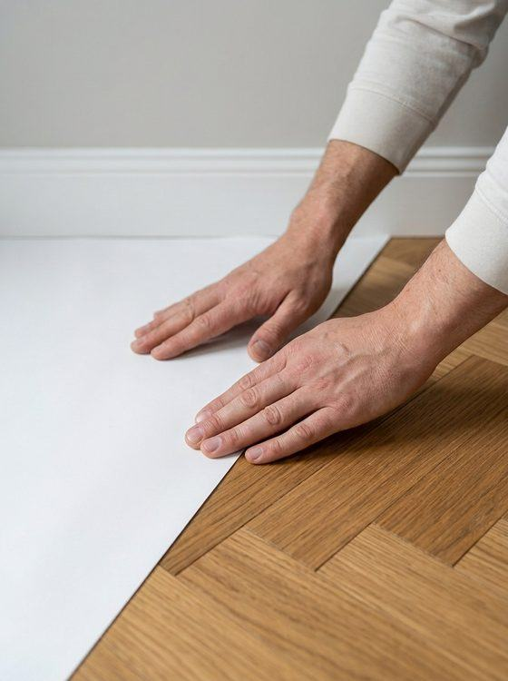

How it works
The roll is self-adhesive, so there is no tape to buy, cut or carry.
Test a small area first
Press a short piece onto an out-of-the-way spot on your floor. Check that you are happy with it before you cover the room.
Unroll along the floor
The 36 in wide roll runs 100 ft and covers 300 sq ft. Start at one edge of the area.
Place it
Lay the sheet where you need it, with the self-adhesive side facing the floor. No tape needed.
Press down
Press the sheet into place, especially along baseboards, and carry on with the job.

Which floors?
VeraGuard is made for finished hardwood, tile, laminate, vinyl and similar floors, and it is designed for temporary use while work is going on. Floor types and finishes vary, so tell us what you are protecting when you request a quote, and test a small area before you start.
Good to know. VeraGuard is water-resistant, not waterproof. Please test a small area first. Questions about how long to leave it down or whether it can be reused? Ask us.